Journal de Voyage
J-10 - Création de ce site internet
Date : 16 juin 2026
J'ai quitté mon appartement à Paris ce matin, et là je suis dans le train pour rentrer à Cadenet.
J'en profite donc pour créer ce site qui me suivra tout au long de ces 5 prochains mois.
Tout est prêt : visa, billets d'avion, assurance, inscription dans l'université d'Auckland et valise (presque).
Départ vendredi prochain !!
J-1
Date : 25 juin 2026
La journée commence bien puisque je me réveille en me rendant compte que j'ai besoin d'une autorisation (ESTA) pour mon escale sur le sol américain. Autorisation qui peut mettre jusqu'à 72h à arriver une fois la demande faite, pour un vol .... demain.
Finalement, chanceuse que je suis, je reçois l'autorisation une heure seulement après avoir fait la demande. Ça commence bien.
Nous avons quitté Cadenet vers 10h30, à 4 (mes parents, Jérôme et moi) en voiture, direction Paris Charles de Gaulle. Nous sommes passés à l'aéroport en arrivant pour pouvoir m'enregistrer. Enregistrement fait, direction l'hôtel, installation puis dîner.
Je n'ai toujours pas de stress pour demain, au contraire, j'ai tellement hâte de tout : des vols, des escales, de l'arrivée à 5h du matin à Auckland, de la découverte de la Nouvelle-Zélande !!
Ma seule appréhension ce sont les au revoir à l'aéroport, les pleurs, mais bon ... C'est une étape inévitable.
JJ
Date : 26 juin 2026
Jour J, jour du départ. Après un excellent petit déjeuner à l'hôtel, c'est l'heure de se retrouver à l'aéroport. Terminal 1, nous retrouvons Mélusine, en classe avec moi à l'EPF, que j'apprécie beaucoup et avec qui je vais partager cette expérience en Nouvelle-Zélande.
Je n'avais pas pleuré jusque là, je me sentais bien, mais en la voyant, les larmes me montent, et puis... tout le monde pleure.
J'envoie ma valise en soute, puis avec mon père, nous nous tournons vers une hôtesse pour lui demander si nous aurons besoin de récupérer nos valises à Los Angeles ou pas. En me voyant pleurer, elle me demande si je vais bien. Question suite à laquelle l'émotion envahit mon père.
Nous nous sommes ensuite dirigés vers la porte d'embarquement et c'était déjà le moment des au revoir. Au revoir très difficiles, très émouvant, remplis d'amour. Je pense que je ne réalise toujours pas que je pars pour 5 mois, pour une "si longue durée".
Premier vol à 11h20 vers Francfort, vol de 1h15, très rapide.
Deuxième vol à 13h50 vers Los Angeles. Nous décollons avec 40 minutes de retard, espérons que cela ait permis à nos valises de nous suivre ! Le vol dure 11h35 et au bout de 5h c'est déjà interminable... J'arrive à dormir 30 minutes au début, 45 minutes à la fin. Je me lève une fois, histoire de me dégouridr les jambes, d'aller aux toilettes et déranger tous mes voisins. Points positifs : les repas étaient très bons (gâteaux apéros, salade de quinoa, pâtes bologneses, pain, beurre, camembert, puis de nouveau des gâteaux apéros, spatzle au fromage, crumble pommes cannelle), et j'étais au hublot. C'était juste magnifique !! Nous avons survolé Amsterdam, le nord du Royaume-Uni par Inverness et Stornoway, le Groenland par Nuuk, le Canada par Kangiqsujuak, Puvirnituq et Island Lake, et enfin les Etats-Unis par Ekalaka, Salt Lake City, Las vegas et Los Angeles. Les paysages sont absolulment sublimes, entre la glace, les lacs, la terre et les montagnes, le spectacle est dingue !!
En survolant les villes américaines, je suis assez étonnée. Je savais que tout était carré, que les rues étaient parfaitement parallèles, mais de le voir depuis le ciel est impressionnnant. Tout est si parfait et minutieux... On dirait presque que c'est faux. Je suis aussi surprise de ne voir aucun building ou immeuble, il n'y a que des maisons avec jardin. Sinon, le nombre de complexes sportifs/stades est énorme, il y en a partout.
Premiers pas aux States et on le sait : le drapeau américain est bien visible à l'entrée dans l'aéroport. Nous sommes dans la file d'attente pour passer la douane, quand une fille derrière nous nous interpelle. C'est Mila, une française et de notre âge. On commence à discuter et là devinez quoi ... elle va aussi à Auckland, dans la même université que nous et dans la même résidence !! Si ça ce n'est pas fou. On passe donc toutes les trois la douane et devons récupérer nos valises. Verdict ... elles sont là !! Aussitôt récupérées, aussitôt réenregistrées et mises en soute. On arrive devant la porte d'embarquement, il nous reste à peu près 3h avant le prochain et dernier vol (il est actuellement 18h, donc 3h du matin en France).
En discutant avec Mila, on se rend compte que nous devons faire une "traveller declaration" avant d'arriver en Nouvelle-Zélande. C'est un document dans lequel nous devons déclarer toute la nourriture que nous avons, les éventuels médicaments, si nous avons des chaussures ou des vêtements qui sont allés en forêt, dans la mer ou une rivière, les pays dans lesquels nous sommes allés au cours des 30 derniers jours (escales comprises)... etc. Cela ne nous prend que quelques minutes et nous recevons directement l'attestation. Merci Mila !
Dernier vol à 21h10 vers Auckland. A peine assise dans l'avion, je m'endors de fatigue. Il faut dire que je n'ai pas vraiment dormi jusque là. Je suis réveillée par le bruit des moteurs au moment du décollage. Nous décollons avec 40 minutes de retard, je me rendors tout de suite après le décollage. Ma voisine me réveille pour le premier repas. Je n'ai pas très faim et ce n'est pas un super repas mais je mange un peu et me rendors. J'arrive à dormir 4h au total et ça me fait beaucoup de bien. L'avion est vide, il y a très peu de monde, donc beaucoup de places. Mélusine qui est une quinzaine de rangées devant moi, a trois places pour elle, ce qui lui a permis de bien dormir aussi. On a donc fait les dernières heures côte à côte. J'ai eu le temps de regarder le premier Hunger games et le début du Seigneur des anneaux avant le petit déjeuner (incroyable au passage : yaourt à la pêche, pain, beurre, gâteau style banana bread, compote, sirop de vanille, un régal). Il faut absolument qu'on regarde tous les films du Seigneur des anneaux dans les prochains jours, la Nouvelle-zélande en est quand même le lieu de tournage !


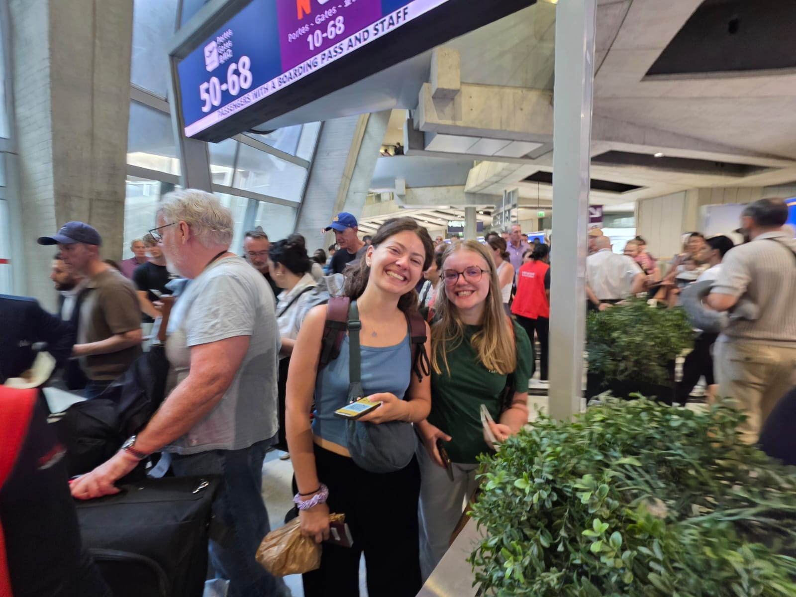
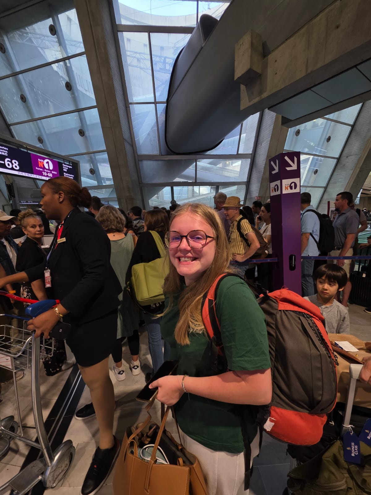
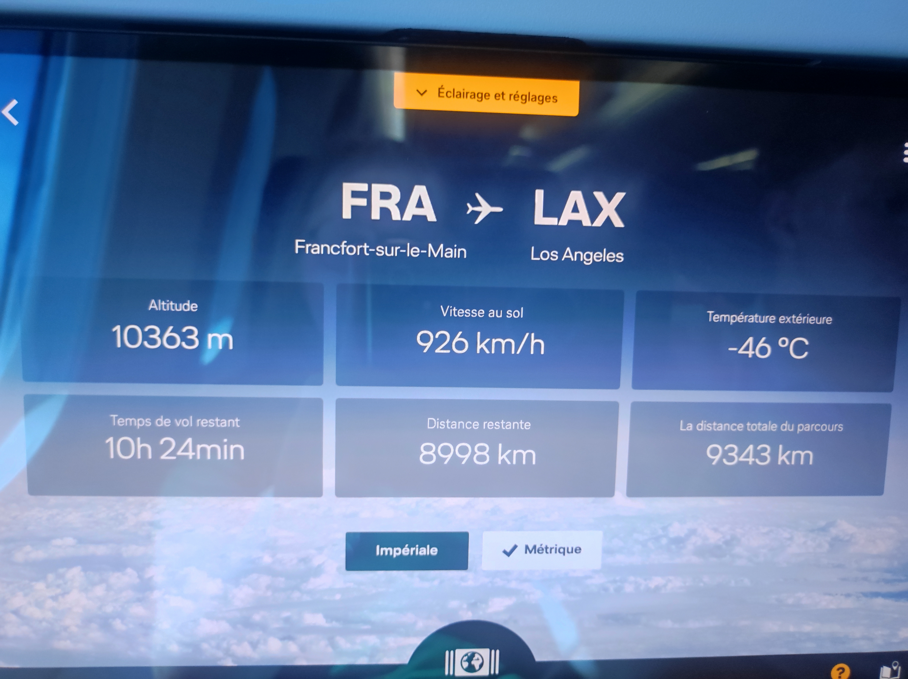

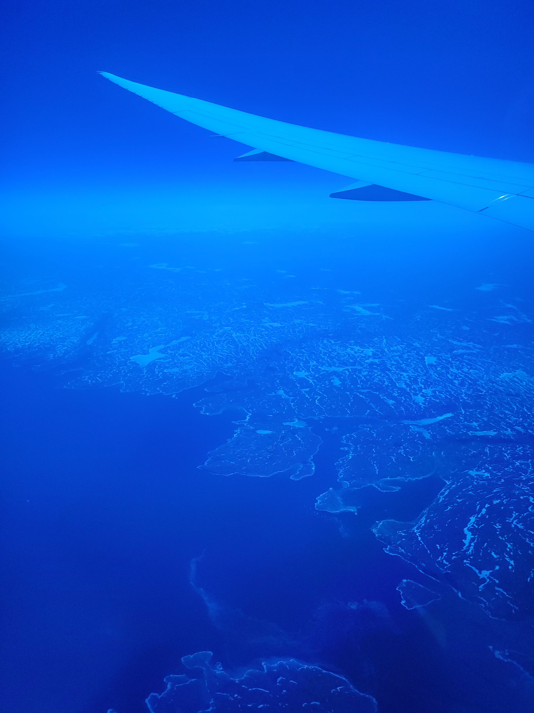


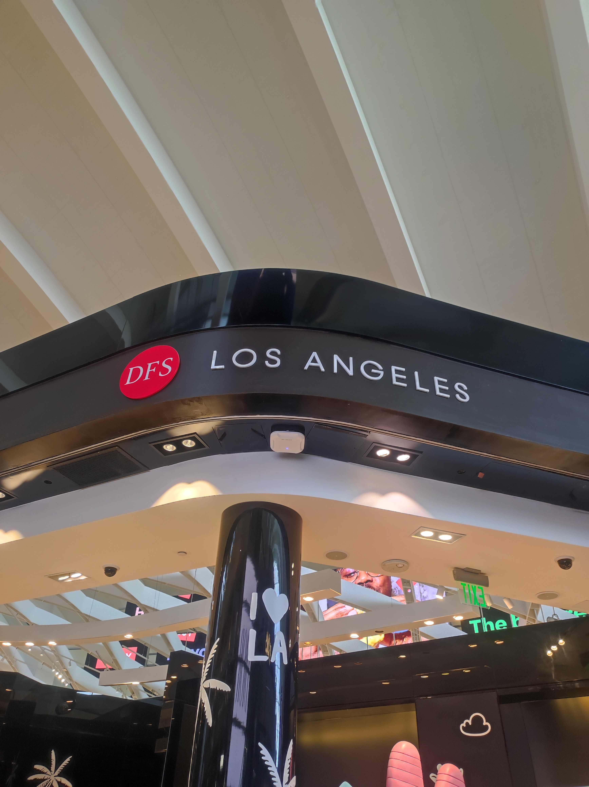
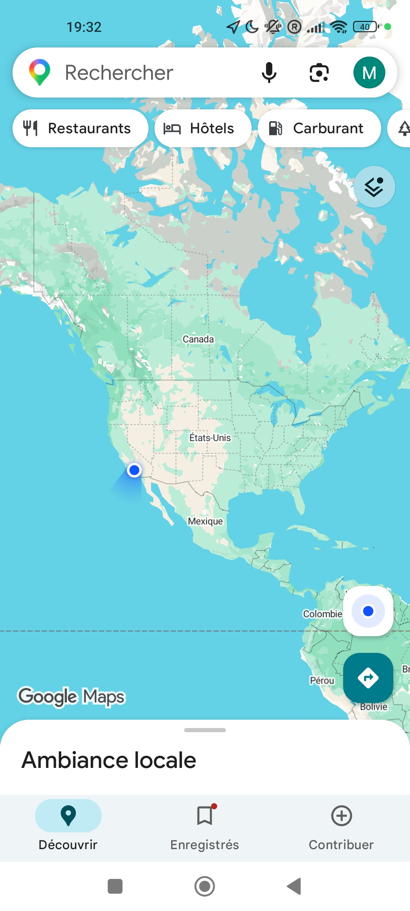

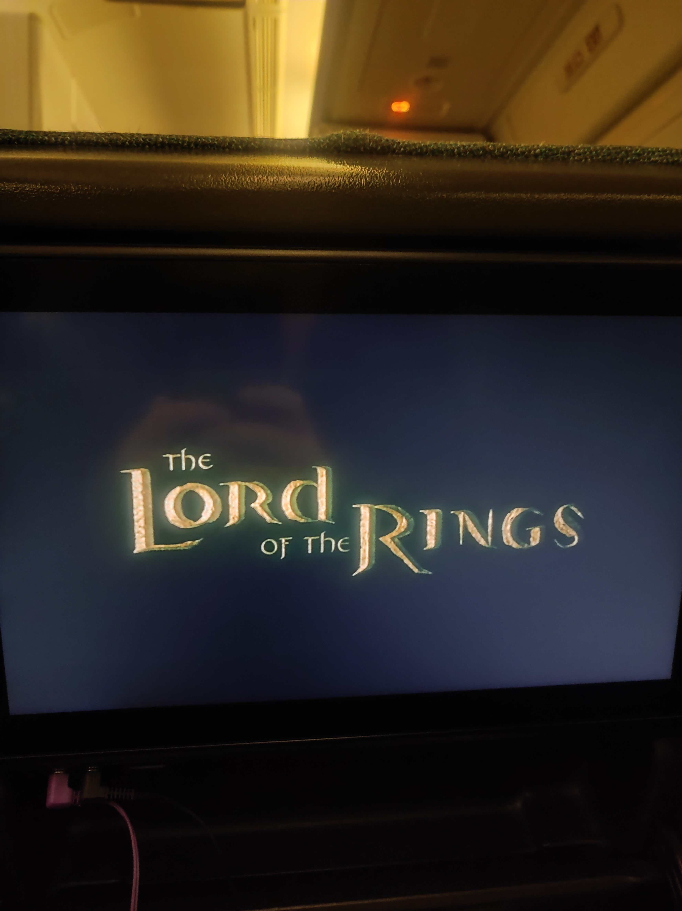
J1
Date : 28 juin 2026
Eh oui, nous sommes déja le 28 juin. Avec le décalage horaire, j'ai vécu un 26 juin interminable mais n'ai presque pas connu le 27 juin (seulement pendant 4h40 si mes calculs sont bons). Je peux tout de même dire que je n'ai jamais été sur Terre le 27 juin 2026, ce que je trouve excellent.
Il est 4h50 et ça y est, nous atterrissons à Auckland. C'était le dernier vol du pilote, donc petit moment d'émotion à l'atterrissage. Je ne réalise pas bien que nous sommes à l'autre bout du monde, que nous sommes littéralement de l'autre côté de là où nous étions il y a à peine quelques heures. En 32 heures, nous avons vu Paris, Francfort, Los Angeles, Auckland, nous avons survolé Amsterdam, le Groenland, le Canada, les Etats-Unis, l'océan Pacifique. C'est juste dingue.
Premiers pas sur le sol neo-zélandais, on récupère toutes les trois nos valises, puis direction cette fameuse douane pour laquelle nous avions dû faire la "traveller declaration". Tout se passe bien, nous n'avons même pas eu besoin d'ouvir nos valises, c'était très rapide. On sort enfin de l'aéroport.
Ça y est, nous sommes à Auckland, avec nos valises, toutes les douanes et différents contrôles passés, aucun souci malgré les trois escales, top. On prend une navette qui nous emmène au pied de la sky tower, au centre d'Auckland. Nous y sommes en moins d'une heure, en ayant payé 6€ chacune. 15 minutes de marche avec nos valises : ça pourrait presque sembler être l'étape la plus simple du voyage, si seulement Auckland n'avait pas été la ville la plus pentue que je n'ai jamais vue... Pousser 23kg de valise, un sac à dos sur le dos, mon sac à main, après 32h de trajet dont 5h de sommeil, ce n'était pas si évident finalement.
Nous voilà arrivées à notre logement, plein centre, c'est super. Il est un peu moins de 7h du matin mais il y a déjà un monsieur à l'accueil qui avait l'air au courant de notre arrivée. Nous avons été vraiment très bien accueillies, il a été adorable avec nous, très souriant, nous a fait visiter toute la résidence, puis nous a montré nos appartements. Mélusine et moi sommes dans le même au 4e étage. Mila, elle, est au 11e étage. Notre appartement est pour 5 étudiants, avec 5 chambres individuelles qui s'ouvrent chacune avec une clé, ce qui nous permet d'avoir chacun notre espace rien qu'à nous. On partage 2 salles de bain, la cuisine et le salon. Salon avec de grandes baies vitrées, ce qui est bien agréable tant pour la lumière que la chaleur (ici c'est l'hiver en ce moment, alors un hiver plutôt doux autour de 12°C, ce qui est très appréciable sachant les 40°C que nous avons quitté à Paris, mais un peu de chaleur dans le salon n'est pas de refus).
On se pose un peu puis on décide de défaire nos valises, de tout ranger et de décorer la chambre de Mélusine (qui avait ramené plein de photos et décorations exprès). Depuis notre arrivée, nous ne savions toujours pas si il y avait d'autres personnes dans notre logement ou pas, il était tôt alors peut-être qu'elles dormaient. Nous essayons de faire le moins de bruit possible. Jusqu'a ce qu'on entende quelqu'un sortir de sa chambre. Nous étions toutes les deux dans le salon, quand notre coloc est arrivé : Mukayi, un garçon de 18 ans qui vit à côté de Londres et qui est à Auckland depuis mars pour un an. Ona pu discuté un peu avec lui, il a l'air super sympa ! Pour le moment nous sommes donc 3, mais c'est un appartelment poiur 5 donc d'autres personnes nous rejoindront sûrement prochainement ou au cours du semestre.
Des petites courses s'imposent maintenant, notamment pour achter des éponges, produits ménagers, de la lessive, du PQ et de quoi manger. J'avais hâte de découvrir les supermarchés d'ici, voir les rayons, les habitudes alimentaires. Nous n'avons trouvé qu'une petite supérette, je ne sais donc pas pour l'instant si elle est vraiment repréentative des habitudes de consommation. On a réussi à y trouver des pâtes, de la sauce tomates, du pain de mie aux graines, des bananes et des oeufs. Il y a très peu de fruits et légumes, et beaucoup de plats préparés. A voir par la suite si c'est la même chose en grande surface.
De retour à la maison, nous avons nettoyé toute la cuisine qui était vraiment très très très sale, bonne douche, puis repas. Mila est venue manger chez nous. On a commencé a regardé tous les 4, le match de foot de la coupe du monde, Colombie-Portugal. Je m'endormais dans le canapé donc je suis rapidement partie faire une sieste. Sieste que j'ai commencé à 15h et qui devait durer 2h ... Je me suis réveillée à 23h55. Depuis impossible de dormir, j'ai fait une belle nuit de 9h donc là je suis en pleine forme. Il est actuellement 5h48, je suis dans le salon depuis 2h du matin environ et je vous raconte mon voyage depuis Paris. Peut-être que je réussirai à dormir encore un peu avant le lever du soleil.
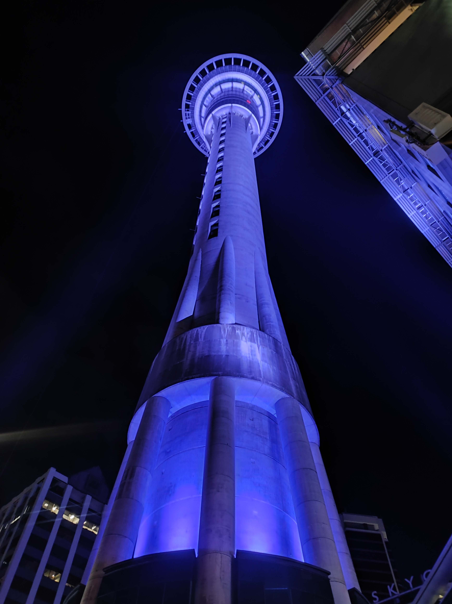


J2
Date : 29 juin 2026
Bon... je n'ai pas réussi à me rendormir. Mélusine s'est réveillée vers 4h et m'a rejoint dans le salon vers 6h. Maintenant que l'on est bien réveillées, autant en profiter. On part donc à 7h du matin en direction du fameux "Harbour bridge", le pont mythique qui traverse Auckland. On se laisse guider par les rues que l'on croise, on erre selon nos envies. Je ne sais pas si nous sommes passées par le quartier chic d'Auckland, mais les rues sont magnifiques, très à l'américaine, belles maisons, avec chacune leur jardin à l'avant, rues larges, palmiers. On a l'impression d'être dans un film américain. Je trouve qu'il y a vraiment un mélange de trois cultures ici : à la fois un côté américain dans l'architecture, quelques touches londonniennes de temps en temps sur certaines maisons, monuments, bâtiments, et une culture asiatique vraiment présente au niveau culinaire, dans les supermarchés mais aussi de par les nombreux restaurants et fast-foods asiatiques. En revanche les rues sont toujours aussi pentues, pas sûr que l'on se mette au running.
On finit par arriver au pied du pont vers 8h quand on aperçoit un café : parfait ! On se pose alors pour prendre un petit déj, chacune un muffin banane chocolat, un thé pour Mélusine et je me laisse tenter par un matcha. Je n'avais jamais gouté, et je pense que je ne gouterai plus ahaha. Ce n'était pas mauvais, mais disons que le goût du gazon... ce n'était pas à mon goût. Le soleil est à présent bien levé, donc on décide de partir faire un tour en ville, nous reviendrons sur le pont pour un lever du soleil un autre jour. On longe alors la mer, c'est tout plat, peut-être que finalement on fera quand même du running. Au passage, on aperçoit un gros poisson sauter 4 fois d'affilées à quelques mètres du bord. Energique de bon matin.
On rentre tranquillement à l'appart, Mélusine me fait découvrir la chakchouka, une spécialité de la cuisine maghrébine. Bon on a fait avec les moyens du bord donc cela s'est résumé à des oeufs cuits dans de la sauce tomate, mais c'était très bon. Puis Mila nous propose d'aller faire un tour en ville. On se rejoint donc vers 13h30 en bas et c'est parti. On n'a pas d'idée particulière en tête, on se laisse guider par les grandes rues du centre ville. On arrive finalement en bord de mer, face au musée maritime. On avait déjà entendu parler de ce musée, nous y sommes alors c'est l'occasion. Nous sommes assez fatiguées donc on ne prend pas le temps de tout lire, on profite plutôt de ce lieu pour admirer les nombreux bâteaux, embarcations, objets de la culture Maori. C'est absolumlent magnifique. Ce musée est très riche culturellement, il y a tellement de choses ! Nous reviendrons sûrement pour prendre le temps de lire et en apprendre davantage sur cette culture.
En sortant nous avons continué de longer la mer, et avons pu assister au passage d'un bâteau sous un pont-levant.
Il est presque 18h, il commence à faire nuit, on décide donc de faire quelques courses avant de rentrer. On a enfin trouvé un grand magasin pour faire nos courses, beaucoup moins cher, alors on en profite pour acheter le nécessaire pour quelques jours. J'en profite aussi pour passer m'acheter une couette et une housse de couette (j'avais emmené un plaid, qui m'a largement tenu chaud la première nuit, mais bon, nous sommes en hiver et il fait très froid dans nos chambres, donc ce n'est pas un mauvais investissement pour les 5 mois qu'il me reste). De retour à l'appart, petit repas toutes les deux avec Mélusine, ce soir ce sera riz, oignons, poivrons, sauce tomate, simple et efficace.
Je réussis à m'endormir vers 20h30, je suis réveillée justement depuis 20h30, la journée a été bieeeeeen longue. Espérons que cela me permette de dormir longtemps cette nuit !!
J3
Date : 30 juin 2026
Ce matin, réveil à 7h30 !! Je suis vraiment vraiment contente et espère bien pouvoir enfin me caler correctement aujourd'hui. Quand Mélusine s'est réveillée, on s'est occupées de faire tout l'administratif qu'il nous restait à faire. On a donc relu tous nos mails concernant la Nouvelle Zélande, pour vérifier que nous n'avions rien loupé, nous nous sommes inscrites pour les différentes activités de la semaine d'intégration qui a lieu la semaine prochaine. On a aussi installé l'application de l'université dans laquelle nous sommes scolarisées ici à Auckland, ce qui nous a aussi permis de découvrir notre emploi du temps : j'aurai donc cours du lundi 8h au vendredi 14h avec 16h par semaine au total.
Repas toutes les deux devant le seigneur des anneaux 2 avec des toasts d'houmous et les restes de la veille, puis Mila nous propose d'aller faire un tour. On se rejoint donc et direction le mont Eden. Cet endroit est absolument sublime. C'est un volcan qui est entré en éruption une seule fois il y a 28 000 ans. Depuis, inactif, on peut s'y balader, y découvrir le cratère, et un panorama merveilleux sur la ville.
Nous sommes redescendues en passant par la ville. C'était un très chouette moment, on a beaucoup discuté, parlé de nos familles, de nos vies à chacune en France.
Mila est rentrée chez elle, et avec Mélsuine nous avons fait des courses pour les 20 ans de Mila que l'on va fêter toutes les trois demain !! On a réusii à lui trouver son plat préféré : des raviolis ricotta épinards, ainsi que de quoi faire des grill-cheese (des croque-monsieur au jambon), des sticks de carottes et un crumble aux pommes. On lui a aussi trouvé un petit cadeau : des masques skin care et une peluche kiwi birds (elle nous en parle tous les jours depuis qu'on l'a rencontrée, c'était son rêve d'en avoir une, cela nous semblait réalisable comme rêve ahaha).
De retour à l'appart, Mila est venue manger chez nous, encore une fois repas tranquille, pommes de terre sautées et petits pois. Puis à 19h nous sommes descendues dans la salle commune puisque nous nous étions inscrites pour le "quiz night". Quiz composé de plusieurs catégories d'une dizaine de questions à chaque fois : retrouver le nom d'un pays dans la langue officielle de ce pays, des évènement autour du foot, le nom de famille de certaines célébrités, un blind test... C'était super sympa comme soirée, et on a pu y rencontrer deux danoises de la même résidence que nous. A 20h, j'étais épuisée donc je suis montée dormir. Je suis un peu dégoutée, moi qui m'était réveillée tard ce matin, je pensais me caler correctement aujourd'hui. Mais bon, apparemment il faut autant de jours que d'heures de décalage pour s'adapter parfaitement. Encore 7 jours !
J4
Date : 1 juillet 2026
Forcément, hier je me suis couchée tôt, alors ce matin, dès 5h30, je suis en pleine forme. Pourvu que cela dure parce qu'aujourd'hui est une journée bien remplie. Commençons par faire nos valises pour Christchurch. Eh oui !! En fin d'après-midi, nous partons avec Mélusine à Christchurch pour voir le match de rugby France - Nouvelle Zélande qui aura lieu samedi soir là-bas (9h10 samedi matin en France). Christchurch est à 1000km au sud d'Auckland, sur l'île du sud, on prend donc des affaires bien chaudes, je pense qu'il fera froid. Sacs à dos faits, Mélusine se met au crumble pendant que je prends ma douche. Préparation de l'apéro, puis Mila arrive chez nous vers 10h30. JOYEUX ANNIVERSAIRE !!
Je trouve ça fou de se dire que nous l'avons rencontrée dans la file d'attente pour passer la douane à l'aéroport de Los Angeles, et que 4 jours après nous fêtons ses 20 ans, toutes les trois, en Nouvelle-Zélande. Apéro, raviolis, crumble, un très bon repas quoi. On a même réussi à lui trouver des bougies et un briquet, roses. J'espère qu'on se souviendra de ce moment, de ses 20 ans.
13h, c'est l'heure pour nous de partir vers l'aéroport. Après une heure, 3 bus et 17 minutes de marche puisque nous ne savons pas lire un GPS, nous y voilà. Enregistrement, passage de la sécurité, l'embarquement est dans 40 minutes, on est bien ! Ah oui petite anecdote, je pars acheter 2 bouteilles d'eau, j'arrive à la caisse et là, la dame me dit que 2 bouteilles d'eau coûtent 10,5 dollars, mais que 3 bouteilles d'eau coûtent 9 dollars... je n'ai pas compris, ce n'est même pas une réduction là, on m'offre une bouteille d'eau et en plus on me rembourse 1,5 dollars. Bon du coup j'ai pris trois bouteilles d'eau.
Décollage à 16h10, nous étions à côté d'un néo-zélandais, avec qui on a un peu discuté. Il était au hublot, j'étais dégoutée, je n'ai rien vu du vol... Arrivée à Christchurch à 18h20, on sort de l'aéroport, et là ... UN FROID POLAIRE !! On savait qu'il allait faire froid, mais à ce point... On trouve un bus, direction le centre ville où se trouve notre airbnb pour les 4 prochains jours. Premier avis sur Christchurch, nous sommes dans le bus et il fait nuit alors mon avis sera peut-être biaisé, mais je trouve que nous passons dans des endroits qui semblent très isolés, alors que nous sommes pourtant en centre ville. On dirait une zone industrielle géante, il n'y a pas d'immeubles ou de buildings, seulement des maisons ou des magasins, tous entourés d'un jardin, rien n'est collé. C'est assez déroutant pour un centre ville. On finit par arriver, on descend du bus. On avait quelques minutes à pied jusqu'à l'appart, mais comme il était déjà tard, on décide de s'arrêter quelque part pour manger. On se trouve un restaurant de ramens, juste excellent, et franchement pas cher.
Enfin, nous arrivons au airbnb, après avoir cru ne jamais pouvoir y entrer, tout était fermé, on ne trouvait pas le boitier où faire le code, bref, on finit par réussir à ouvir le portail et entrer dans la résidence. Magnifique, que des logements très neufs. On voit que cet endroit a été pensé pour en faire des airbnb. Notre appart est vraiment bien, très neuf, très beau, très fonctionnel. Je suis vraiment contente d'être ici.
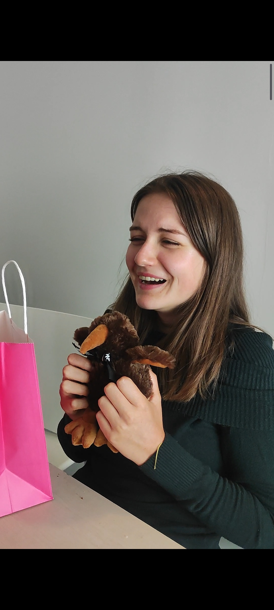
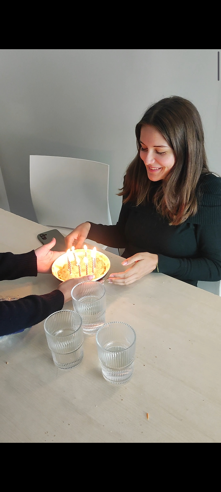

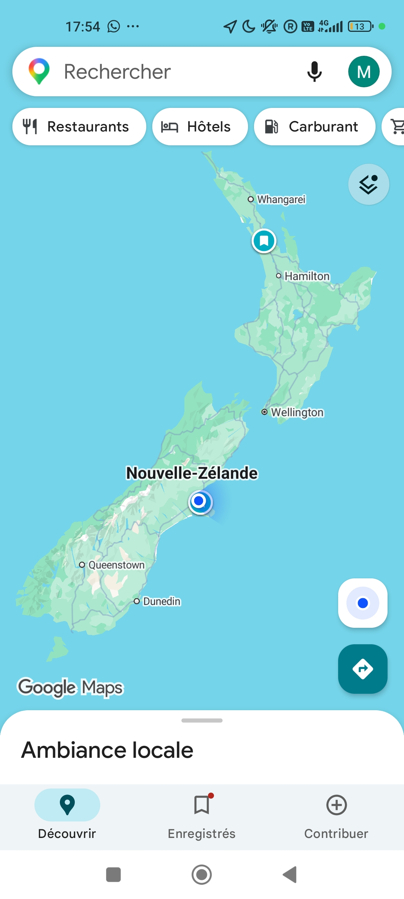


J5
Date : 2 juillet 2026
Aujourd'hui on se réveille tranquillement vers 7h, et on regarde un petit peu sur les réseaux sociaux ce qu'il y a de sympa à faire autour de Christchurch. C'est vraiment un super moyen de trouver les meilleurs endroits, avec de nombreuses photos, vidéos et avis. Comme nous avons le match de rugby samedi soir, on se dit qu'il vaut mieux rester sur Christchurch samedi et profiter d'aujourd'hui et demain pour se balader à l'extérieur de Christchurch. On repère une balade sympa à 40 minutes en bus de là où nous sommes. Nous voilà donc parties vers Sumner beach. Dès le trajet en bus, les paysages sont magnifiques, les montagnes tombent dans la mer et nous offrent un très joli décor. Nous avions repérées une petite maisonnette pour prendre le petit déjeuner, on s'est régalées !
Ventres remplis, la balade peut démarrer. On commence par monter dans une colline par un petit chemin entre les maisons, vue plongeante sur Christchurch et l'océan. On passe entre des maisons absolument sublimes, toutes en bois, colorées, en pleine nature, et toujours avec cette vue !! Petit tour de tyrolienne dans une aire de jeux en arrivant au sommet, avant de découvrir la vue de l'autre côté : l'océan et la montagne. La balade continue le long d'une petite route, puis dans un lotissement, avant d'arriver sur un chemin de randonnée. Ici, nous avons remarqué qu'il y a souvent des barrières entre la ville et la campagne. En france, on ne les franchirait pas, mais ici, elles servent juste à ce que les moutons n'envahissent pas les villes. Il y a donc souvent une petite porte retenue par un crochet, que l'on peut franchir sans souci.
Jusqu'à la fameuse grotte "the cave", nous sommes sur un petitw chemin de terre, en pleine montagne, tels des hobbits dans le seigneur des anneaux. La grotte se trouve en amont d'une gorge de montagne, on y accède donc en passant par un côté de cette gorge, et le retour se fait de l'autre côté, en face. Il n'y a pas d'arbres, juste des herbes, ce qui nous permet d'avoir une vue vraiment dégagée, tant sur la grotte, sur le chemin retour de l'autre côté, que sur l'océan. C'était plutôt une balade qu'une réelle randonnée, mais ca nous a fait beaucoup de bien et on en a pris plein les yeux.
Nous nous sommes trouvées un café pour manger puis nous avons passé l'après-midi à longer la mer, tranquillement, en discutant toutes les deux. On a même eu droit au coucher du soleil sur une petite rivière qui se jetait dans la mer.
De retour à Christchurch, quelques courses s'imposaient. Nous sommes aussi passées à la pharmacie pour acheter du sérum physiologique. Et alors là, c'était vraiment impressionnant : la pharmacie était immense, il y avait tous les produits de pharmacie, parapharmacie, ainsi que toites les marques. Les rayons étaient très hauts, jusqu'au plafond. Les prix étaient notés sur des étiquettes jaunes et roses fluo, on aurait dit que tout était en solde, ça ne faisait pas vraiment médical, rien n'était blanc ou épuré. C'était assez particulier.
Ce soir, c'était pâtes, sauce tomate et beaucoup de fromage, bien fondu au four, le tout devant le seigneur des anneaux : meilleure soirée !!
J6
Date : 3 juillet 2026
Ce matin, on décide de partir à Gondola. Ce sont des télécabines qui nous permettent d'aller en haut d'une montagne juste à côté de Christchurch. Une fois en haut, la vue est dingue : Christchurch et l'océan d'un côté, un lac au creux des montagnes de l'autre.
Le temps est parfait, du soleil, une vue dégagée, il ne fait pas trop froid, c'est l'idéal pour se balader, alors on descend quelques mètres de la montagne sur laquelle nous sommes pour monter en haut de celle d'en face. On empreinte un petit chemin de terre, qui serpente au milieu d'herbes jaunies et de nombreux moutons. On s'arrête un instant sur un rocher pour admirer la beauté du paysage, manger un peu de pain et boire un coup, puis c'est reparti. En haut, la vue est encore plus belle, on aperçoit même les montagnes enneigées derrière Christchurch.
En redsecendant, on croise le néo-zélandais qui était à côté de nous dans l'avion... improbable !
Après quelques minutes d'attente, le bus arrive pour nous ramener en centre-ville. Nous avions repéré une friperie, "Toff's", sur les réseaux sociaux, un immense hangar avec des vêtements pour seulement 2 dollars. Mélusine voulait trouver un pantalon de randonnée, et moi une veste chaude et un pantalon de randonnée aussi. Finalement Mélsuine repartira avec 2 pantalons, et moi un pull.
En rentrant, il n'était que 16h, alors on en a profité pour prendre chacune du temps pour soi : moi pour vous raconter quelques journées, et Mélusine pour écrire dans son journal. Puis soirée très tranquille devant le seigneur des anneaux avec le même repas qu'hier soir !!
J7
Date : 4 juillet 2026
4 juillet, NOUS SOMMES LE 4 JUILLET : CE SOIR C'EST MAAAAAATCH !!
On a tout prévu, mais avant ça, on a quand même passé la journée dans Christchurch, à découvrir la ville.
Ce matin, nous nous sommes donc promenées le long d'une rivière qui passe dans Christchurch, en direction de cette fameuse rue colorée : la Regent Street. Effectivement très mignonne et colorée, mais assez petite et touristique. Enfin bon, c'était quand même à voir. Evidemment, vêtues de nos plus beaux t-shirts et maillots de l'équipe de France de rugby (merci Mélusine !!), on se fait arrêter plusieurs fois dans la rue par des supporters, français ou néo-zélandais. J'adore cette ambiance, mais surtout cette ambiance de fair-play entre les supporters, qui nous souhaitent bonne chance pour ce soir, rient avec nous, ça devrait être ça le sport : un jeu avant tout, un jeu où on supporte une équipe, des joueurs, et où le plus important reste le fait de passer un bon moment ensemble. Et justement, au bout de cette Regent Street, on aperçoit deux supporters français, qui nous informent d'un rassemblement de français ce midi, autour d'une plancha, dans un parc. Nous n'étions pas du tout au courant, mais c'est génial, ça va nous permettre de rencontrer du monde, et de parler rugby !!
On part donc toutes les deux s'acheter à manger avant de les rejoindre. Nous avions repéré des grandes halles, avec à manger pour tous les goûts : Riverside. Pour ce midi, ça sera donc Souvlaki (c'était excellent).
Quand nous sommes arrivées dans le parc, nous n'étions pas si nombreux, seulement une dizaine, ce qui était chouette puisque nous avons bien pu discuter. Pour la plupart, ce sont des jeunes entre 20 et 30 ans, qui sont ici depuis plusieurs mois, seuls en van. On a donc pu recueillir plein d'informations sur les endroits à visiter, sur l'île du nord, l'île du sud, les meilleures périodes. C'était un moment vraiment sympa.
De nombreux français sont arrivés au fur et à mesure, je pense que nous devions bien être une soixantaine au final. Ça a d'ailleurs été l'occasion de se dessiner le drapeau français sur les joues et de récupérer des rubans pour nos cheveux.
Vers 15h, on a décidé de rentrer pour se reposer un peu. N'étant pas encore parfaitement calées, il faut quand même que l'on puisse tenir pour le match de ce soir !! Repos puis habillage, coiffage, maquillage, on avait tout prévu : en début de semaine nous avions réussi à trouver un magasin à Auckland qui vendait toutes sortes de déguisements, dont des colliers de fleurs aux couleurs de la France et un immense drapeau bleu, blanc, rouge.
Let's go, direction le stade, à 20 minutes à pied de chez nous, il est 17h45, pour un coup d'envoi à 19h, c'est large. C'est large certes, sauf quand vous vous appelez Mathilde, et que vous partez confiante avec votre GoPro et son manche... Devinez qui a dû faire l'aller-retour à l'appart en courant, 35 minutes avant le début du match parce que sa GoPro n'a pas passé la sécurité... Voilà voilà...
Bon heureusement, l'envie de ne pas rater la marseillaise m'a fait courir vite, si bien que je suis revenue à 18h50 au stade. Timing parfait finalement !
La marseillaise commence et nous sortons nos plus belles voix (comme peut le témoigner le vlog qui arrive très prochainement). S'en suit l'hymne néo-zélandaise (sublime) et le haka : j'ai pleuré... Voir le haka en vrai et en Nouvelle-Zélande, c'est juste dingue. 34-32 pour les All Blacks, mais nous n'avons pas démérité, les actions étaient magnifiques, les émotions aussi !!

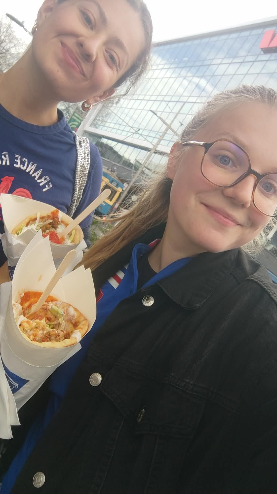
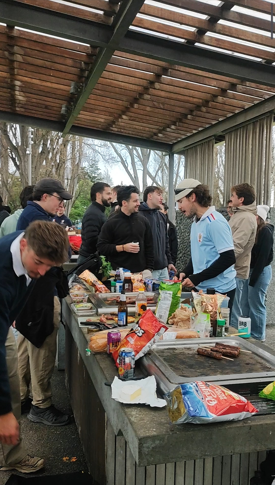
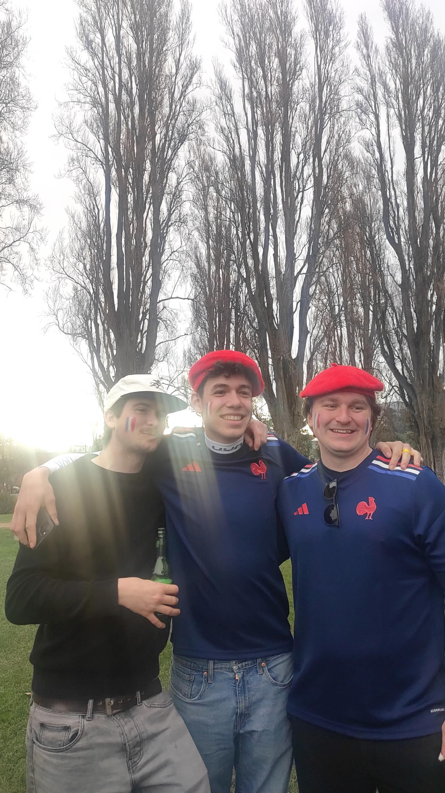
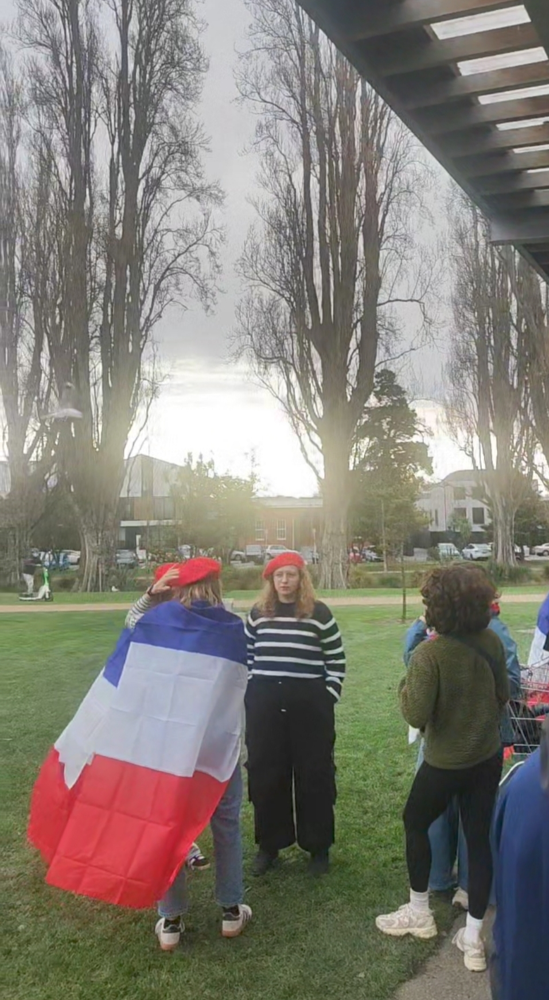
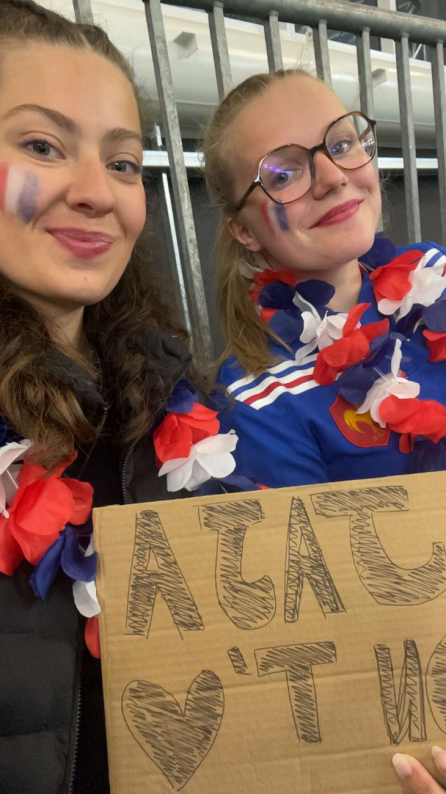
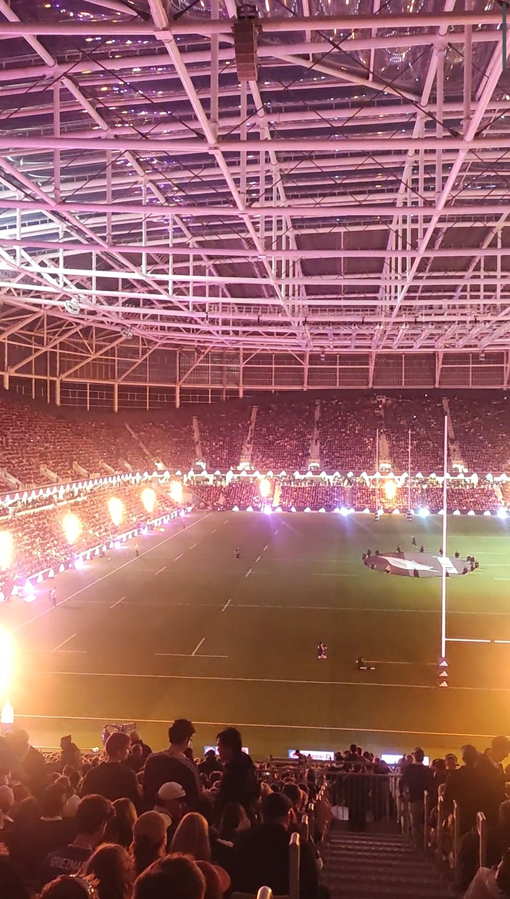
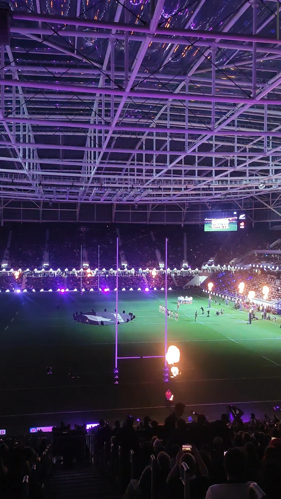
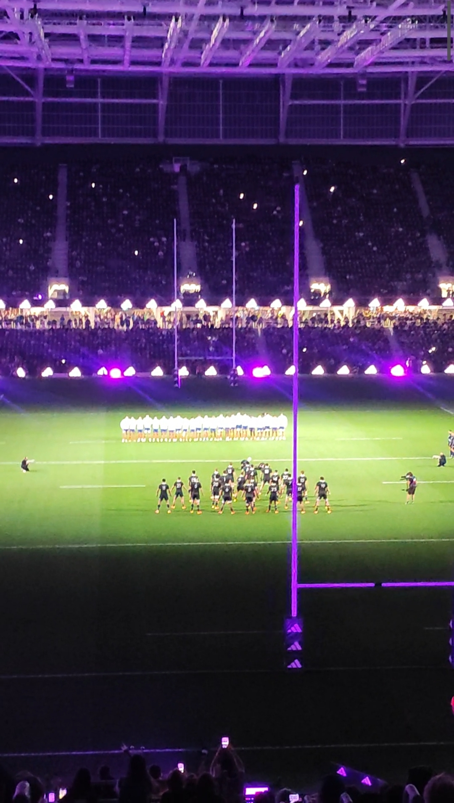
J8
Date : 5 juillet 2026
Premier matin où je me réveille grâce au réveil, à 8h30, et ça, ça fait plaisir, le décalage horaire commence à être accepté. On doit rendre le airbnb pour 10h, donc petit déj, on fait les sacs et on y va. Notre avion ce soir est à 18h55, ce qui nous laisse une bonne partie de la journée pour faire à Christchurch ce que nous n'avions pas eu le temps de faire durant ces trois derniers jours. Ce qui est chouette, c'est que nous avons chacun un sac à dos, pas de valise, donc nous sommes libres de profiter de la journée comme on le souhaite (ce qui peut être un peu plus compliqué avec des valises). Notre airbnb ne se trouvait pas très loin du jardin botanique de la ville, alors c'est le premier endroit où nous nous sommes baladées aujourd'hui. Très grand, avec de grands espaces verts et des points d'eau, c'est agréable de s'y promener. Il est 11h alors on en profite pour se poser sur un banc et établir une liste de recettes que nous aimons toites les deux avec Mélsuine. Cela nous sera bien pratique pour ce semestre, quand on voudra cuisiner l'une pour l'autre.
Liste faite, on se dirigfe vers Riverside, où nous avions déja mangé la veille. Cette fois-ci ce sera nouilles et nems. Puis on décide de prendre le bus pour rejoindre un endroit que nous avions repéré lors de notre première randonnée, jeudi. Depuis la colline, on pouvait apercevoir un demi-pont qui avançait au-dessus de l'océan. On se disait que ça pouvait être une bonne idée d'y aller, mais il était trop tard jeudi, alors on avait reporté ça à plus tard, et plus tard c'est aujourd'hui.
Effectivement, c'était une super idée, on a pu marcher sur une immense plage, face à l'océan, avec le bruit des vagues. C'est juste sublime. Depuis le pont, on aperçoit les montagnes de part et d'autres, et puis l'océan pacifique à perte de vue. On a aussi pu admirer le courage de 4 surfeurs , juste là à quelques dizaines de mètres du pont, dans une eau à mon avis glaciale. Déjà pour nous sur le pont on se caillait, en plus il y avait du vent, mais alors eux... respect. Nous sommes rester une bonne heure puis nous avons repris un bus jusqu'au centre-ville, où nous étions motivées à trouver un café, histoire de passer les dernières heures au chaud, avant notre avion. Premier café, plus de place, on sort un peu dépitées, il fait froid et on aimerait rester pas trop loin de la gare routière pour pouvoir reprendre un bus tout à l'heure en direction de l'aéroport.
Puis soudain, Mélusine me lance en rigolant "sinon on se fait les ongles". Ah bah sans rire, oui c'est une très bonne idée. Alors on s'est fait faire les ongles, il y a pire comme attente d'avion !!
On a finalement réussi à se trouver un café, puis direction l'aéroport. Notre sommes arrivées chez nous vers 21h45 et Mila nous a invité à manger. Il faut savoir que Mila nous a assez mal vendu ses talents de cuisinière alors c'était assez drôle aujourd'hui de voir Mélusine inquiète du repas de ce soir. Mais c'était très bon et c'était une super soirée toutes les trois !!